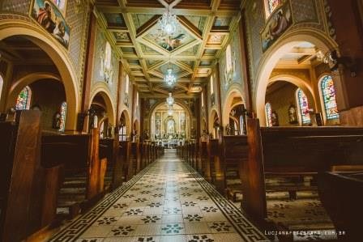
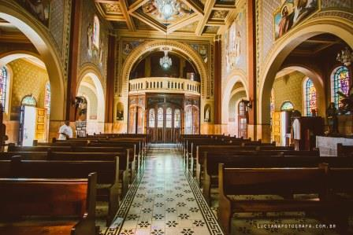
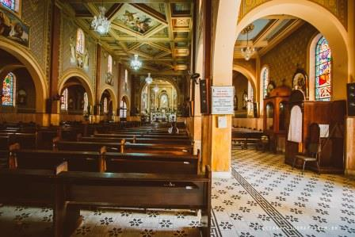

Igreja da Matriz
{kind=link}
A Igreja Matriz de São Roque foi construída no século XVII pelo povoado de Pedro Vaz. Em 1836 passou por uma ampla reforma em sua estrutura, cujas, as paredes estavam ameaçadas. Em 1837 o novo prédio foi concluído, sendo que a mão de obra foi inteiramente gratuita, pois o material empregado à construção eram as taipas socadas por braço escravo. Em 1872 foi feita a reforma geral da pintura e do relógio da torre. Desta ocasião em diante a igreja passou a ter a sua fachada nas linhas arquitetônicas do estilo colonial barroco, belo em suas linhas singelas e harmoniosas, foi assim que os são-roquenses conheceram a igreja até o ano de 1937, a chamada “Matriz Velha”.
Depois iniciou uma nova construção da Matriz. Mesmo não possuindo um estilo sacro definido, não impediu de ser transformada em uma das mais belas igrejas de São Paulo, graças ao seu interior magistralmente pintado e decorado pelo talento dos irmãos Gentili. As paredes, bem como os vitrais, retratam a vida e morte do Padroeiro, São Roque.
O compartimento que acolhe a imagem do Padroeiro representa ao fundo a vida peregrina de São Roque. A igreja tem ainda no presbitério dois magníficos murais, ao lado do Evangelho tem o profeta Elias no deserto sendo confortado pelo Anjo que lhe traz alimento, símbolo da eucaristia. Ao lado da epistola, São Roque no cárcere recebendo forças espirituais através da Sagrada Comunhão. Completam o presbitério Anjos representando a oração e o sacrifício da Divina Eucaristia e do Espírito Santo.
O teto do templo possui ainda o arco do presbitério, a bela cena da anunciação e traz a glória de São Roque, os símbolos das virtudes teologais: fé, esperança e caridade. As paredes do corpo da igreja trazem os quatro evangelistas, a explicação do Padre Nosso por símbolos originais e de alta expressão, como também os sete sacramentos. As imagens que adornam a Igreja são todas de procedência estrangeiras e de grande valor.
 {kind=link}
{kind=link}